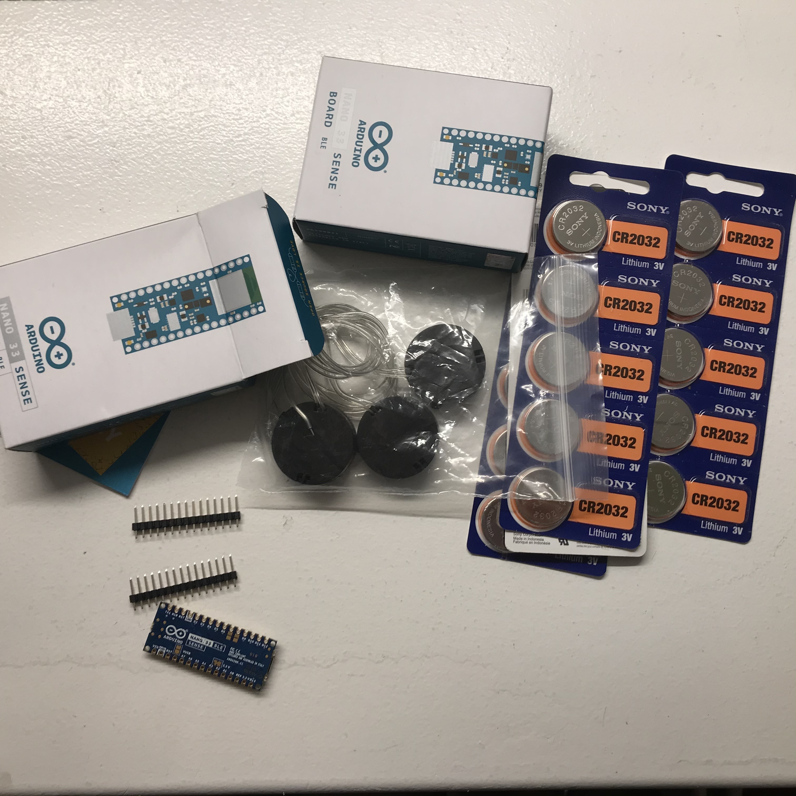
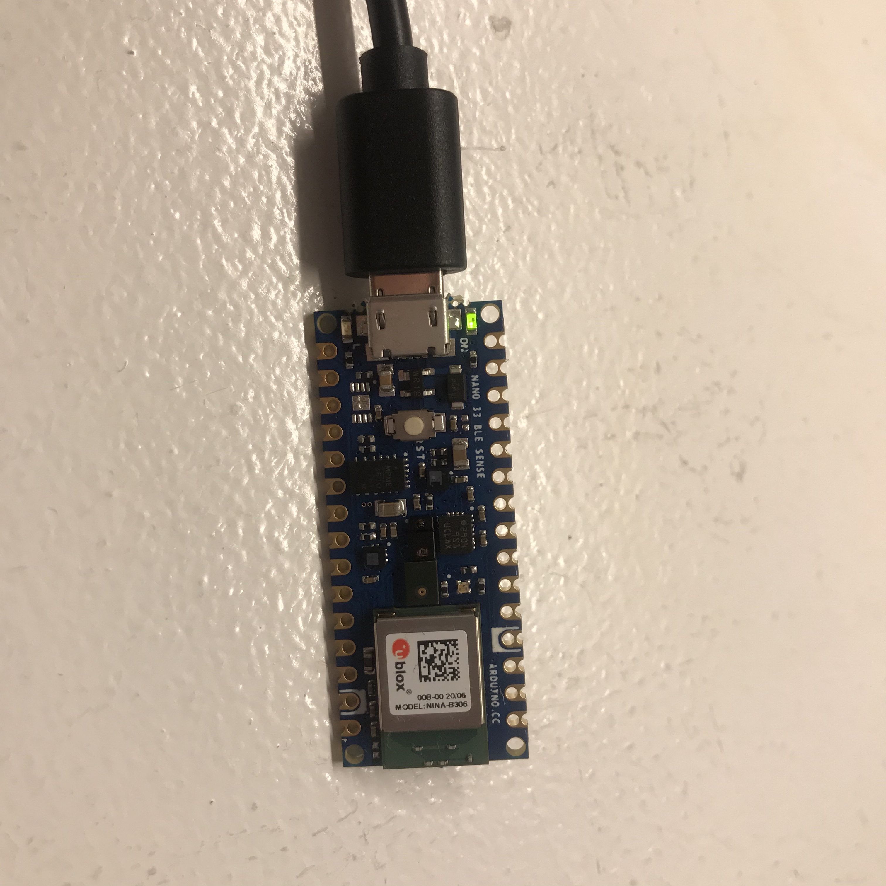

Arduino Nano 33 Sense
APRIL 10–11
SETTING UP THE BOARD


It was an exciting weekend as I got both of the Arduino Nano 33 Sense boards that I ordered as well as the coin cell battery packs and more coin cell batteries than anyone really every could need.
I followed the Arduino tutorial for setting up the board, which involved installing a new board library and new sketch libraries on my IDE. This board senses many many things including pressure, humidity and sound, but for now I only downloaded libraries for the IMU and for the gesture sensors.
I knew that eventually I would need to solder wires to my board. They did provide pins, but since I am making a wearable, I don’t really want a bunch of spiky pins sticking out at me. I was getting mildly stressed out about the prospect of screwing up the soldering and ruining my board, or soldering the wrong pins, or the other million things that could go wrong. But then I remembered that because the board has all its sensors built in AND it has a USB port, that for now I could wait on the soldering and literally just plug the board into my computer to load code, then use that same USB connection to power it when it needs to communicate over BLE. (Special thanks to my ever-patient husband for listening to me talk this out and come to this realization.)
The tutorial calls for just using the basic Blink sketch example to ensure the Nano 33 will work. It also included instructions about power. The Nano 33 can only take 3.3V, not 5V. I’ll need to revisit this page when I set up my coin cell battery power situation to be sure that I don’t fry my microcontroller.
I also uploaded the sample sketch for the accelerometer. I plan to use this with the p5 to BLE to test out the visualization and get my bearings around the data.
/*
Arduino LSM9DS1 - Simple Accelerometer
This example reads the acceleration values from the LSM9DS1
sensor and continuously prints them to the Serial Monitor
or Serial Plotter.
The circuit:
- Arduino Nano 33 BLE Sense
created 10 Jul 2019
by Riccardo Rizzo
This example code is in the public domain.
*/
#include
void setup() {
Serial.begin(9600);
while (!Serial);
Serial.println("Started");
if (!IMU.begin()) {
Serial.println("Failed to initialize IMU!");
while (1);
}
Serial.print("Accelerometer sample rate = ");
Serial.print(IMU.accelerationSampleRate());
Serial.println(" Hz");
Serial.println();
Serial.println("Acceleration in G's");
Serial.println("X\tY\tZ");
}
void loop() {
float x, y, z;
if (IMU.accelerationAvailable()) {
IMU.readAcceleration(x, y, z);
Serial.print(x);
Serial.print('\t');
Serial.print(y);
Serial.print('\t');
Serial.println(z);
}
}